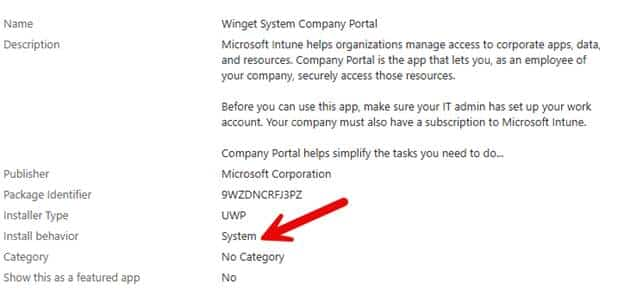
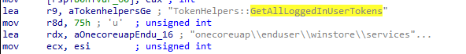
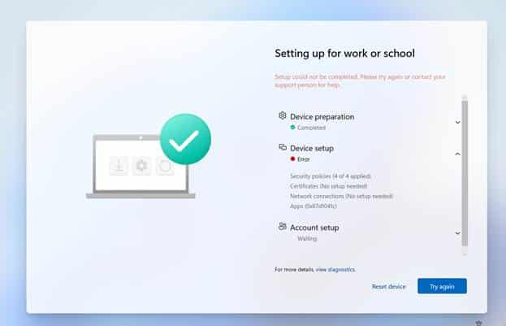
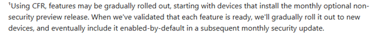
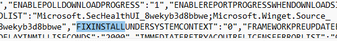

The Company Portal suddenly stopped installing during Autopilot pre-provisioning after the May Windows update, leaving devices stuck with error 0x87D1041C. In this blog, we uncover what changed, why system context deployments failed, and how a Microsoft flight rollback restored the Company Portal installation.
Autopilot and the 0x87D1041C error
It started with Sandy asking why Company Portal had suddenly failed to be installed during Autopilot pre-provisioning (0x87D1041C)

It was pretty clear that nothing had changed in Intune. The Company Portal was still deployed via the Microsoft Store in system context, and the same Autopilot configuration had worked without issues before. The only real difference was that the device had been installed with the May Windows update. With the May update installed, the Company Portal now failed with 0x87D1041C…
which just means that the application was not detected after installation completed successfully. The 0x87D1041C error indicated that the installation had finished, but Intune could not detect the app afterward. That appeared to be exactly what was happening. The Company Portal package was present under C:\Program Files\WindowsApps.

But the Enrollment Status Page still reported that the installation had failed with 0x87D1041C. The Company Portal was assigned in system context, so it would be installed during Autopilot pre-provisioning.


Changing the assignment to user context delayed the installation until after the user signed in. That prevented the ESP from failing on the required app, but it also meant Company Portal was no longer installed during pre-provisioning. Noticing that changing the install behavior fixed the issue confirmed that the Store package itself was fine, but it was not a good solution. During Autopilot pre-provisioning, Company Portal needs to be installed before the device is handed over to the user. Waiting for the user to sign in defeats the purpose of assigning it in the system context.
Sandy was not the only one seeing this. Similar reports appeared on Reddit and Microsoft forums after the May update. Company Portal had worked before the update, failed afterward, and returned the same detection error. Something inside the Windows Store installation flow had changed.
Following the error 0x87D1041C in the Store Installation
Installing the Microsoft Store app involves more than placing package files in the WindowsApps folder.

Windows first obtains the Store package, stages its content on the device, and then registers or provisions it in the correct scope. The presence of the package under WindowsApps indicates that the content reached the device, but it does not confirm that the final registration completed successfully. To find where that process had changed, we focused on three Windows components:
- InstallService.dll
- AppXDeploymentClient.dll
- AppXDeploymentServer.dll
InstallService.dll controls the Store installation workflow. It searches for the correct package, prepares the installation session, downloads the content, and determines which installation path to use.
AppXDeploymentClient.dll exposes the package management operations for staging, registering, and provisioning AppX and MSIX packages.
AppXDeploymentServer.dll performs the underlying deployment work. It processes the package manifest, updates the package repository, and records the package state for the device and its users.

Because the Company Portal was already present under WindowsApps, the package download and staging process had clearly completed. The failure appeared to be happening later, when Windows decided how the package should be registered. That brought us back to InstallService.dll.
Comparing April and May to Fix 0x87D1041C
We compared the May version of InstallService.dll with the version from the April update. The most interesting change appeared inside: UWAInstallWork::_DoNormalInstall

This function controls the normal Store installation flow. It prepares the update session, downloads the required files, and eventually chooses how the application should be installed. Inside the May version, we found a new feature: FixInstallUnderSystemContext with the corresponding feature ID: 61372494


The Fix Installed Under System Context name immediately stood out. The Company Portal was failing only when deployed in the system context during autopilot pre-provisioning, and there was a newly introduced feature specifically intended to change exactly that installation path… that couldn’t be a coincidence, right? The next step was to find out what the feature actually did.
Fix Install Under System Context
When FixInstallUnderSystemContext is active, InstallService.dll loads an additional configuration value:FIXINSTALLUNDERSYSTEMCONTEXT When both the feature and its configuration value are enabled, InstallService logs: Enumerating all users if run in system context.

With it, the installation will then be redirected into: UWAInstallWork::_DoInstallForAllLoggedOnUsers

Instead of continuing only through the normal system installation path, InstallService begins looking for logged-on users and tries to register the Store package for them.
That may work during a normal user session, but Autopilot pre-provisioning is different. The device is being prepared before the actual user receives it, so there may not be a normal user session available yet. To understand the impact, we opened _DoInstallForAllLoggedOnUsers.
Looking for Logged-On Users
The function starts with: TokenHelpers::GetAllLoggedInUserTokens(…) The InstallService collects the available logged-on user tokens and then processes each user individually.


For every token, it retrieves the user SID and searches for packages that should be registered for that user. The logging inside the function shows this clearly: Attempting to register update for User. When no applicable package is found, InstallService logs: Nothing to register for User. Skipping Install.
The important detail is what happens when there is no normal logged-on user. During Autopilot pre-provisioning, the real user has not yet signed in. If the function does not find a usable user token, there is no user for whom Company Portal can be registered.
The package may already have been downloaded and staged, but the registration step expected by Intune is never completed. InstallService can still finish the operation without returning a package installation failure. Intune then checks whether Company Portal is installed, cannot find it in the expected state, and reports 0x87D1041C.


That also explains why the user context assignment continued to work. Once the user signs in, InstallService has a real user token and can register Company Portal for that user. The problem only occurs when the installation is expected to complete before the user session ends.
Was the Feature Actually Enabled?
Finding the feature inside the DLL did not prove that it was also enabled by default. Microsoft regularly ships feature code before enabling it (it should be turned off by default!!)


The feature can remain dormant until it is activated through Windows feature management or a service-side configuration. Let’s check if that was the same with this FixInstallUnderSystemContext function. When inspecting the InstallService OneSettings configuration. Inside the JSON payload, we found: “FIXINSTALLUNDERSYSTEMCONTEXT”: “1”

The new code was not only simply present inside the May binary… The Controlled feature rollout service also had enabled it on all devices. That explained why the issue appeared without any change to the Intune assignment. The May update introduced the new InstallService behavior, while OneSettings activated the code path on Windows.
From that moment, a Store installation started by LocalSystem could be redirected into a flow that depended on logged-on user tokens. During Autopilot pre-provisioning, that was exactly the wrong moment to depend on a user session.
Reaching Out to Microsoft
On Friday, we shared the findings with Microsoft. We explained that Company Portal only failed in system context, while the user context assignment still worked. We also shared the difference between the April and May versions of InstallService.dll, the new FixInstallUnderSystemContext feature, and the OneSettings value that enabled it.

The following Monday…. the Sccinstallservice.json was updated (yes… I build a tracked.. more in this in an upcoming blog). The updated JSON was now showing that the flight was reverted.


We repeated the Autopilot pre-provisioning test with Company Portal still assigned in the system context. This time, Company Portal installed successfully again. Nothing had changed in Intune. The application assignment was the same, the Enrollment Status Page configuration was the same, and the Company Portal was still expected to install before the user received the device…and others were reporting the same

The only change was that the InstallService flight had been turned off. We cannot claim that our message was the only reason Microsoft reverted the flight. Other customers were reporting the same issue, and Microsoft may already have been investigating it.
The timing was still hard to ignore. We shared the InstallService findings on Friday, the flight was reverted on Monday, and Company Portal immediately started installing again.
When the Fix Becomes the Actual Problem
FixInstallUnderSystemContext was probably intended to improve Store installations started by LocalSystem. The problem was how that new behavior interacted with Autopilot pre-provisioning. A system context installation that runs before the user receives the device cannot depend on a normal user session being available.
By redirecting the installation into the logged-on user’s path, InstallService changed the final package state. Company Portal reached the device, but it was not registered in the context Intune expected to detect.
That is why the Store installation appeared successful while the Enrollment Status Page still failed with 0x87D1041C.
The most interesting part was not that Company Portal disappeared. It never did. It was already sitting inside WindowsApps.
Windows had simply stopped finishing the part that made it usable and detectable during Autopilot pre-provisioning.